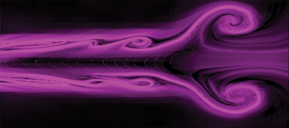

Journal articles
- C. O'Farrell and J. O. Dabiri (2014). "Nested contour-dynamic models for axisymmetric vortex rings and vortex wakes",
Journal of Fluid Mechanics, Vol. 748, pp. 521-548 (pdf)
- C. O'Farrell and J. O. Dabiri (2014).
"Pinch-off of non-axisymmetric vortex rings",
Journal of Fluid Mechanics, Vol. 740, pp. 61-96 (pdf)
- C. O'Farrell and J. O. Dabiri (2012).
"Perturbation response and pinch-off of vortex rings and dipoles",
Journal of Fluid Mechanics, Vol. 704, pp. 280-300 (pdf)
- C. O'Farrell and J. O. Dabiri (2010).
"A Lagrangian approach to identifying vortex pinch-off",
Chaos: an Interdisciplinary Journal of Nonlinear Science
(Focus Issue on Lagrangian coherent structures in fluid flows) Vol. 20, 017513 (pdf) .
- C. O'Farrell and M. P. Martin (2009).
"Chasing eddies and their wall signature in DNS data of turbulent boundary layers",
Journal of Turbulence. Vol. 10, N 15.
Conference papers
- O'Farrell, C., Brandeau, E. J., Tanner, C. L., Gallon, J. C., Muppidi, S., and Clark, I. G., (2016). "Reconstructed Parachute System Performance During the Second LDSD Supersonic Flight Dynamics Test", AIAA Atmospheric Flight Mechanics Conference. June 13 - 17, Washington, D.C.
- Zumwalt, C. H., Cruz, J. R., Keller, D. F., and O'Farrell, C.. (2016). "Subscale Wind Tunnel Test of Ringsail and Disk-Gap-Band Parachutes", AIAA Applied Aerodynamics Conference. June 13 - 17, Washington, D.C.
- Karlgaard, C., O'Farrell, C., and Ginn, J., and Van Norman, J. (2016). "Supersonic Flight Dynamics Test 2: Trajectory, Atmosphere, and Aerodynamics Reconstruction", 26th AAS/AIAA Space Flight Mechanics Meeting. February 14 - 18, Napa, CA
- Dutta, S., Bowes, A. L., Striepe, S. A., Queen, E. M., O'Farrell, C., and Ivanov, M. C. (2016). "Post-Flight Assessment of the Low Density Supersonic Decelerator Flight Dynamics Test 2 Simulation", 26th AAS/AIAA Space Flight Mechanics Meeting. February 14 - 18, Napa, CA
- Machalick, W., Witkowski, A., and O'Farrell, C. (2015). "Design of Subscale Parachute Models for LDSD Transonic Dynamics Wind Tunnel Testing",
23rd AIAA Aerodynamic Decelerator Systems Technology Conference. March 30 - April 2, Daytona Beach, FL
- Tanner, C. L., O'Farrell, C., Gallon, J. C., Clark, I. G., Witkowski, A., and Woodruff, P. J.(2015). "Pilot deployment of the LDSD Parachute via a Supersonic Ballute",
23rd AIAA Aerodynamic Decelerator Systems Technology Conference. March 30 - April 2, Daytona Beach, FL
- Muppidi, S., Van Norman, J. W., O'Farrell, C., Bose, D., and Clark, I. G. (2015). "Computational Analysis and Post-Flight Validation of Ballute Aerodynamics",
23rd AIAA Aerodynamic Decelerator Systems Technology Conference. March 30 - April 2, Daytona Beach, FL
- Kutty P., Karlgaard C., Blood E.M., O'Farrell, C. , Ginn J., Schoenenberger M. and Dutta S. (2015). "Supersonic Flight Dynamics Test One: Trajectory, Atmosphere, and Aerodynamics Reconstruction",
25th AAS/AIAA Space Flight Mechanics Meeting. January 11-15, Williamsburg VA
- Blood, E., Ivanov, M., O'Farrell, C., Ginn, J., Kutty, P., Karlgaard, C., and Dutta, S. (2015). "LDSD Supersonic Flight Dynamics Test 1: Post-flight Reconstruction", IEEE Aerospace Conference. March 7 - 14, Big Sky, MT
Conference presentations and abstracts
- McMullen, R., McKeon, B.J., and C. O'Farrell (2014).
"Starting Process for a Hemispherical Shell with a Central Circular Vent",
Bulletin of the American Physical Society Division of Fluid Dynamics Meeting. November 24-26, San Francisco, CA.
- C. O'Farrell and J. O. Dabiri (2013).
"Nested contour-dynamics models for axisymmetric vortex rings and vortex wakes",
Bulletin of the American Physical Society Division of Fluid Dynamics Meeting. November 24-26, Pittsburgh, PA.
- C. O'Farrell and J. O. Dabiri (2013).
"Pinch-off and Optimal Vortex Formation in Biological Propulsion",
SIAM Conference on Applications of Dynamical Systems. May 19-23, Snowbird, UT.
- C. O'Farrell and J. O. Dabiri (2012).
"Perturbation response of model vortex rings and dipoles",
Bulletin of the American Physical Society Division of Fluid Dynamics Meeting. November 18-20, San Diego, CA.
- C. O'Farrell and J. O. Dabiri (2012).
"The formation of non-axisymmetric vortex rings",
23rd International Congress on Theoretical and Applied Mechanics. August 19-24, Beijing, China.
- C. O'Farrell, R.W. Whittlesey and J. O. Dabiri (2011).
"The formation of vortex rings from elliptical nozzles",
Bulletin of the American Physical Society Division of Fluid Dynamics Meeting. November 20-22, Baltimore, MD.
- C. O'Farrell (2011).
"Optimal vortex formation in biological propulsion",
Workshop on Resonance, Flexibility and Biopropulsion.
Princeton University, Princeton NJ July 14
- C. O'Farrell and J. O. Dabiri (2011).
"Vortex 'pinch-off' in the Norbury and Pierrehumbert families of vortices",
Workshop on Coherent Structures in Dynamical Systems.
Lorentz Center, Universiteit Leiden, The Netherlands May 16-20
- C. O'Farrell and J. O. Dabiri (2011).
"Vortex 'pinch-off' in the Norbury family of vortices",
Southern California Symposium on Flow Physics, University of Southern California, April 16.
- C. O'Farrell and J. O. Dabiri (2010).
"The stability of a family of vortex rings",
Bulletin of the American Physical Society Division of Fluid Dynamics Meeting. November 21-23, Long Beach, CA.
- C. O'Farrell and J. O. Dabiri (2010).
"Lagrangian coherent structures in the wake of an anguilliform swimmer",
Workshop on Natural Locomotion in Fluids and on Surfaces: Swimming, Flying and Sliding.
Institute for Mathematics and its Applications, University of Minnesota, Minneapolis MN June 1-5
- C. O'Farrell and J. O. Dabiri (2010).
"A Lagrangian analysis of the wake of an anguilliform swimmer",
Southern California Symposium on Flow Physics, University of California, Irvine CA, April 17.
- C. O'Farrell and J. O. Dabiri (2009).
"A Lagrangian approach to identifying vortex pinch-off",
Bulletin of the American Physical Society Division of Fluid Dynamics Meeting. November 22-24, Minneapolis, MN.
- C. O'Farrell, S. Priebe and M.P. Martin (2007).
"The wall signature of hairpin packets in turbulent boundary layers",
Bulletin of the American Physical Society Division of Fluid Dynamics Meeting. November 18-20, Salt Lake City, UT.